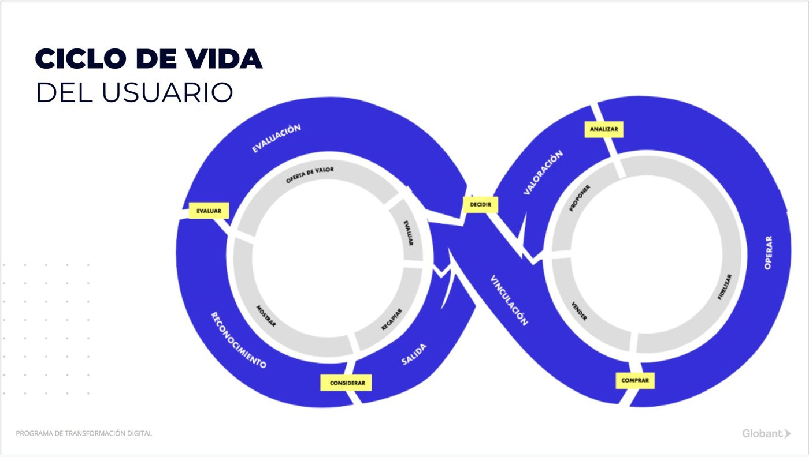
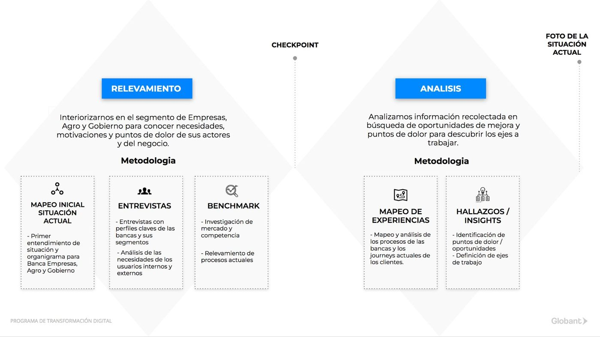
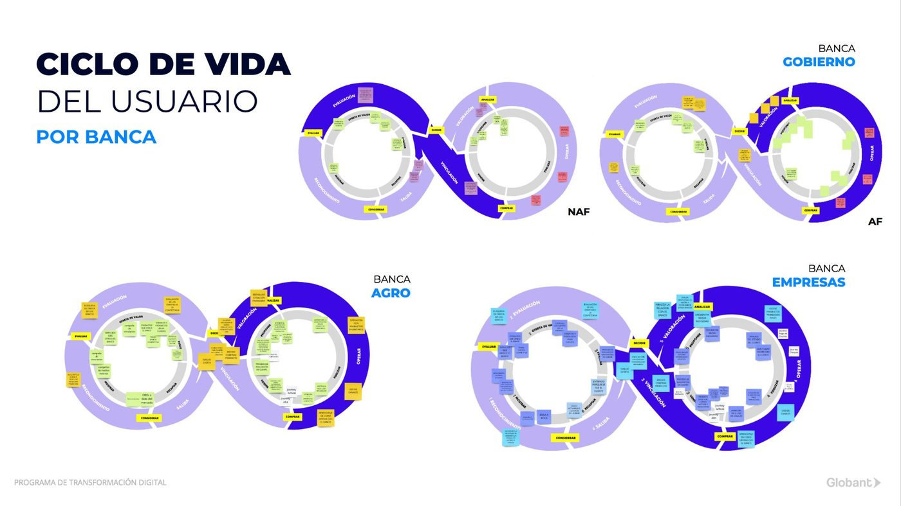
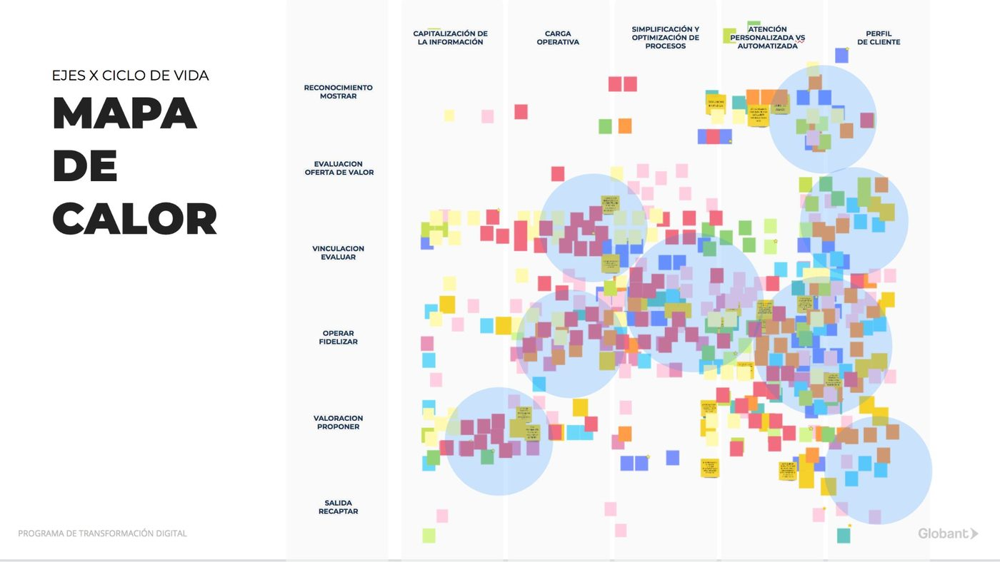
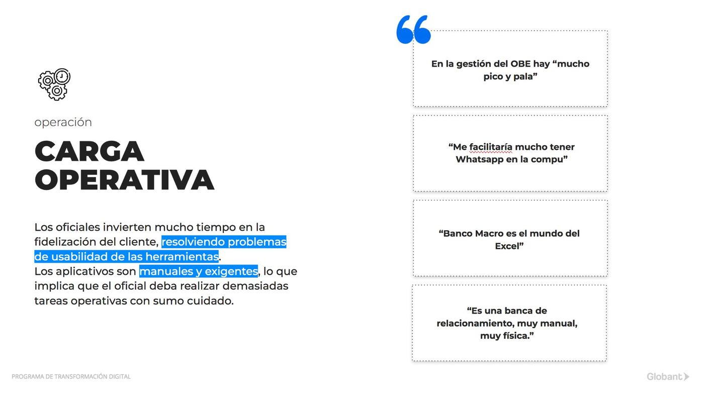
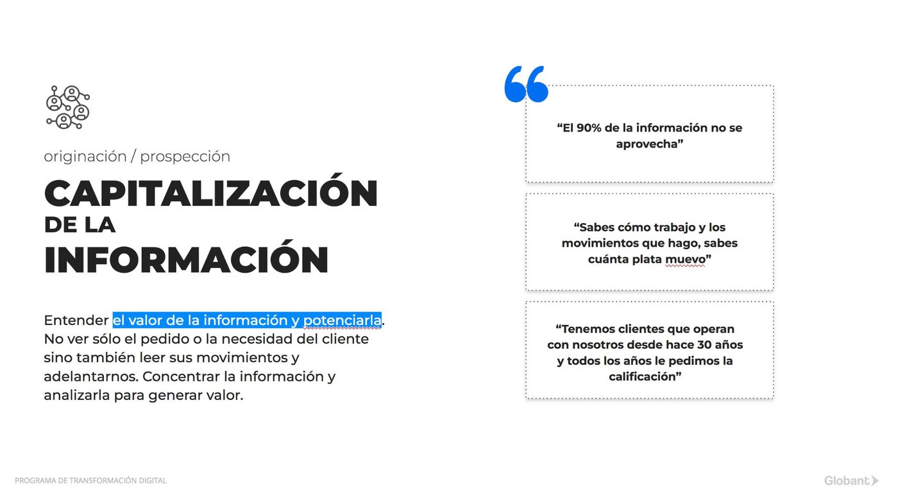
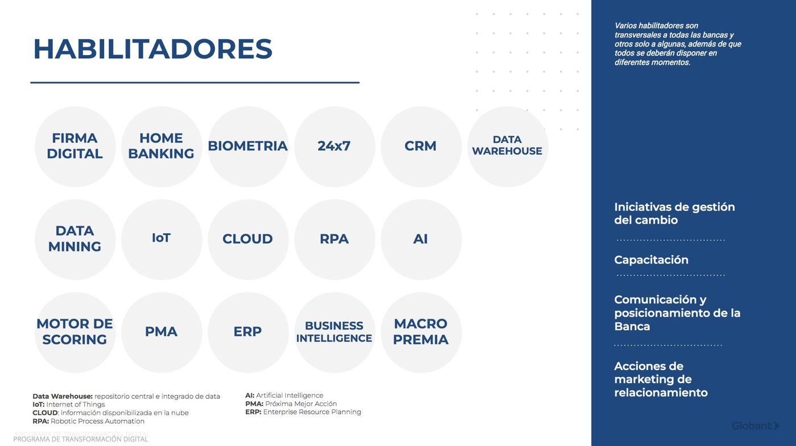
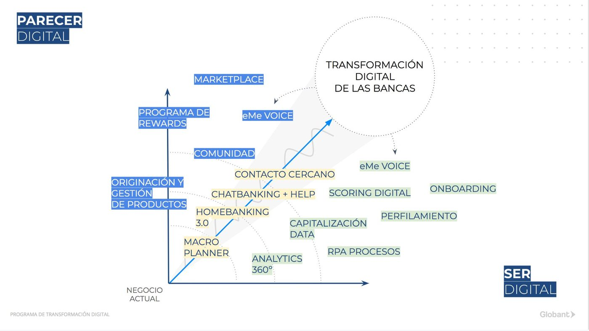

Discovery para programa de transformación digital
Después de cinco años transformando Banca Individuos, teníamos la oportunidad de proponer cómo llevar el programa al sector mayorista de Banco Macro. Primero había que entenderlo.

El desafío
Entender objetivos y necesidades de las bancas mayoristas para proponer cómo trabajaríamos con ellas en la transformación digital.
Banca Empresas, Agro y Gobierno tenían clientes, productos y equipos distintos. El banco necesitaba un diagnóstico real antes de invertir, y nosotros necesitábamos ser expertos en un negocio que todavía no conocíamos en profundidad.
Mi rol
Co-lideré el discovery de punta a punta.
Junto al equipo de estrategia de Globant definí etapas y tiempos para dar claridad al cliente y setear expectativas. Planifiqué y llevé adelante entrevistas, análisis y workshops de co-creación con el cliente y los stakeholders, y participé en la construcción del diagnóstico y del backlog final.
Cómo lo hicimos
En la primera etapa buscamos toda la información posible de las tres bancas para ser expertos en el tema y poder generar un diagnóstico real. Documentamos cada instancia y validamos con stakeholders para corroborar que teníamos la información adecuada.
Kick offs
Uno por banca: Empresas, Agro y Gobierno.
Documentos
Compartidos por el banco y analizados.
Horas de entrevistas
Con las tres bancas.
Colaboradores
Entrevistados: oficiales, gerentes y equipos de soporte.
Clientes
Entrevistados de las tres bancas.

Lo que encontramos
Con la información relevada y validada, empezamos a detectar los insights que serían los pilares del diagnóstico. Descubrimos que había 6 etapas clave en el ciclo de vida del usuario de banca, y para cada una definimos objetivos de negocio y de usuario.

Después definimos 5 ejes de problemas que eran cross a las bancas. Al cruzarlos con las etapas del ciclo de vida, pudimos mapear dónde estaban los problemas más críticos.



Las bancas se sorprendieron de tener los mismos problemas, y validaron todo el trabajo realizado.
Del diagnóstico al backlog
Con hipótesis de problemas definidas y el diagnóstico presentado, trabajamos en un backlog de iniciativas para generar un ciclo de trabajo que resolviera los problemas detectados y mejorara la experiencia interna y externa de las tres bancas.
Potenciar operaciones online
Formalizar un canal de comunicación
Impulsar fidelización y comunidad entre clientes
Consolidar la información del cliente
Aportar inteligencia y análisis a la información


Resultados
Iniciativas priorizadas
Backlog acordado entre Globant y el cliente.
Bancas alineadas
Un diagnóstico común, validado por las tres bancas mayoristas.
Lo que me llevo
Validar antes de diagnosticar
Volver a los stakeholders con lo relevado nos dio un diagnóstico que el banco sentía propio.
Lo común une
Mostrar que las tres bancas compartían problemas convirtió tres agendas en una.
Del insight a la iniciativa
Un discovery estratégico termina en decisiones priorizadas, no en un documento.